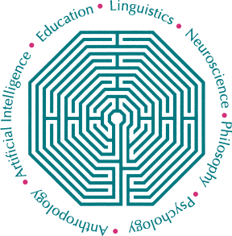
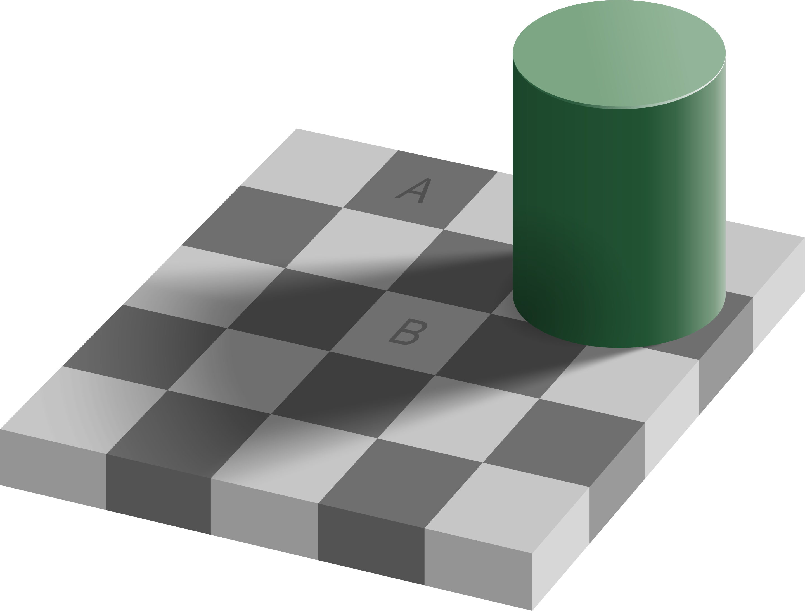

This chapter originally authored by Todd M. Gureckis. Release under the license for the book.
In this course you will get a hands on tour of how to conduct research in cognitive science. However what is cognitive science? Is it really different than psychology? What about cognitive neuroscience?
Psychology
The first thing to understand is that psychology is a very large field with many diverse interpretations and subfields. In fact, it is even confusing for me, as a professional "psychologist," to describe what I do to many people because they might have the wrong impression.
For example, I was an electrical engineering major in college with an interest in computer science and artificial intellgence. I never took a single psychology course as an undergraduate. Now that I am a professor in a psychology department, people assume I'm anything from a counselor to a psychiatrist. However, I know next to nothing about these topics. At the same time, a clinical psychologist might not know how to program a neural network or a robot, whereas I do. Yet we are both called psychologists. Confusing isn't it?
The most generic interpretation, which makes some sense, is that all psychologists share an interest in human behavior, and most have an interest in the inner workings of the human mind, and most try to approach this using the scientific method (meaning using data to test hypotheses). However it is still endlessly confusing for the general public and for many other people as well!
So, somewhere within this huge space which is called "psychology" there exists this somewhat smaller field called "cognitive science." When did cognitive science become a thing? Who started it? Why? These are all great questions that we try to answer as you read this chapter.
Interestingly there is important reasons to think that there isn't such a strong line between perception and cognition (Goldstone & Barsalou, 1998) (pdf). Our perceptual abilities in many ways enable our cognitive processes and our cognitive processes tend to shape our perception.
Cognition and Perception
The title of this course is "Lab in Cognition and Perception." Before unpacking the field of cognitive science, it is helpful to define these terms as well.
In many ways, the study of cognition and perception, taken together, is the study of human intelligence because these topics examine how we (as a species) are so successful at adapting to our environment. When I say intelligence I don't necessarily mean IQ tests (like how well a person can do on a test), but more like how we are able to go about our daily lives without running into walls, getting endlessly lost, getting hit by a car, etc...
When we think about human intelligence we often think about our capacity to build complex technologies like computers and put people into space. However, even seemingly mundane aspects of our daily life require remarkable types of intelligence. For example, people can walk across many different types of terrain (e.g., a carpetted hallway, a busy city street, or a treacherous mountain trail). This takes a tremendous amount of intelligence and the coordination of our perception and thinking abilities. We have to plan where to step, avoid obstacles, anticipate the movements of other people and cars, and keep in mind where we are headed. One way we know this is remarkable because it is very hard to build robots that can safely traverse these types of environments with the same agility.
The scientific study of cognition and perception is therefore the science of the workings of our internal mental processes that enable us to perceive the world, think about it, interact with it, and modify it.
To be fair, some people might disagree with my characterization of these subfields but I am mostly laying out the common view on such things. The discussion about what is and isn't studied by people working in different subfields of psychology is actually a somewhat mundane topic that mostly interests faculty who have to decide who to hire to be a professor and what they should be working on. The more interesting questions are the scientific ones which we will dive into this semester!
Cognition and Perception are just different elements of psychological research... sort of how the field breaks up a big topic like "how are we so smart?" into manageable sub-tasks. At NYU for instance, there are faculty such as myself, Brenden Lake, Bob Rehder, Brian McElree, Marjorie Rhodes, Andrei Cimpian and Cate Hartley that focus on cognition and others such as Mike Landy, David Heeger, Marisa Carassco, Denis Pelli, or Jonathan Winawer focus on perception. Others such a Larry Maloney or Weiji Ma tend to work on both topics.
Cutting across this is cognitive neuroscience which is yet another sub-field which studies the way that the brain enables cognition and perception. Cognitive neuroscientists largely study the same topics as experts on cognition or perception, but often include additional dimension about how such abilities might be organized in the brain. In a lot of ways cognitive neuroscience is less of a distinct field itself but a set of methods that people adopt when studying cognition and perception. However, one aspects of cognitive neuroscience that is somewhat distinct is a emphasis on the localization of mental functions (i.e., asking where in the brain are our memories stored or where in the brain do we make decisions). The "where in the brain" question is largely a neurosience question rather than a psychological one, however, cognitive neuroscience is an interdiscplinary field and thus adopts some of the same goals as you might have in a neuroscience department while often emphasizing more complex, human-unique mental functions.
So how does "Cognitive Science" fit in?
A key, defining aspect of the field of cognitive science is that idea that intelligence is a property of systems rather than of humans or animals specifically. Thus, a robot or a computer program might show some elements of "intelligence" (we often call that "artificial intelligence"). Even plants might show intelligence. From a cognitive science perspective that's all well and good because intelligence just means complex forms of sensing and adaptating to the environment. And intelligence might be more of a scale rather than an all-or-nothing property that a system might have.
Once you start thinking in this more general way a lot of interesting ideas come to you. For instance, we are smart but are we the smartest? Like perhaps human cognition is good but represents a relatively low bar in the world of intelligences. Perhaps some alien life form or a super-powered artificial intelligence system would be even more intelligent than humans! You also start wondering what stops us from being smarter (Do we have limited memories? Does our ability to attend to only a small number of things at once limit us?) and how we might develop tools or technologies that would make us overcome these limitations.
This broader perspective also makes fields outside of psychology seem more relevant. For instance, once you think of intelligence as a property of systems rather than animals, then computer science research on artificial intelligence becomes much more interesting and relevant to psychology. In addition, fields like linguistics which study in detail the structure and function of language become important (language is one of the tools that humans use to make us super smart!). In addition anthropology, which studies difference in human behavior across cultures becomes interesting because it helps us to understand which aspects of our intelligence are universal and which come from our culture. Neuroscience helps us to understand the detailed internal structure of naturally intelligent systems (e.g., animals).

Figure 1 The logo for the Cognitive Science Society, a professional society devoted to advancing the study of the human mind. The logo represents the interdisciplinary nature of the field combing Education, Linguistics, Neuroscience, Philosophy, Psychology, Anthropology, and Artificial Intelligence.
In fact, if you look at Figure 1 you can see the logo for the major professional society devoted to Cognitive Science is made up of seven aligned fields each concerned with intelligence in the abstract. If you are a person, like me, that has trouble deciding which topic you find most interesting to study (because you like a lot of different things) Cognitive Science could be a great field for you.
In sum, Cognitive Science is a fundamentally interdisciplinary field that connects across university departments. Some universities have created their own "Cognitive Science" department and major. However, it is more common that Cognitive Science is a field that kind of exists between departments. Sometimes people refer to the aligned disciplines as the "Cognitive Sciences." There are interesting recent discussions about the defintion of this field (Núñez et al., 2019) (pdf).
There is an excellent and comprehensive explanation of the history and current content of the "computational theory of mind" here.
One of the most important ideas in Cognitive Science is the theory of the "computational theory of mind." According to this idea, the basic purpose of our minds and brains is to compute. What do we mean by compute? Well, the theory holds that the mind essentially runs a computer program that processes information you receive through your perception and uses that to guide your behavior.
Now, when you think about your own behavior you might find it hard to think of what you do as a program. Most programs you interact with are often somewhat fixed and rigid (e.g., Google Sheets or a Docs just follows rules to determine how to format a document. Although these programs are complex they are no where near as complex as you!). However, we are increasingly seeing that new types of computer programs are entering our lives that seem a lot more like what we do. For instance you can talk to your Google phone or Siri and it will retrieve general facts (try asking Siri or Google "How old is Obama?"). In addition, it can even understand some subtle aspects of speech (if you followup and ask Google "How old is his wife?" it will often correctly interpret that "his" refers to Obama and then tell you Michelle Obama's age). Since we also comprehend speech and can speak back with information we have stored in our minds, such programs seem a bit more human-like.
However, you still might object to the idea that you are like a computer pgoram because of things like how emotions and mood effect your behavior, as well as the fact that you are much more complicated. You don't just sit there waiting for a person to ask you questions, you have ideas and goals yourself. It is true that we don't have computers currently that have such broad self-motivated desires and goals (although this is a topic I explore in my own research, (Gureckis & Markant, 2012)!). However, there isn't a clear in principle reason to assume that things like emotions or goals are not something computers could one day be programmed to posess. Emotions for instance might be triggered by particular mental thoughts and states and act as warning signals about distress or discomfort. In other words there might be some underlying rationale or purpose that can be described in detail.
The reason that many are confident about the computational theory of mind has to do with theoretical work done by Alan Turing on the concept of universal computation (Turing, 1936). Going deeply into the theory of universal computation and Turing machines is beyond the scope of this class. However, Turing showed that there exists a very simple machine (called a universal Turing machine) which can be programmed to implement basically all other types of machines. As it turn out, the computer you are reading this on is itself a Turing machine. As a result, the computer you are reading this on is, in principle capable of running a program that would correspond to the set of rules that your mind runs. Some advocates for the computational theory of mind view this fact as evidence that using computers to implement cognitive theories is ultimately going to be successful. Others take a bit stronger view that the mind literally is a computational device (not just can be approximated quite closely with a computer program).
I have a somewhat more pragmatic view on these things. Basically, I think the computational theory of mind is practically useful because it forces theorists to be more concrete and explicit about what they mean. Instead of a theory that is expressed in words, writing code to represent your theory makes you specify each of the elements of the code in detail. Then, these different aspects can be debated more honestly. I guess this view is a bit more "computational pragmatism" although I also find the hypothesis that nature created a computational information processing device in our brains is pretty amazing (if true).
Is Cognitive Science is the hardest science?
The study of the human mind and intelligence is perhaps one of the greatest open challenges in science. It is a challenge for two main reasons. One is that we don't really understand yet how we are so smart. We simply can't engineer machine to act as smart as we do, despite the fact that there would be a lot of money to be made if you could make a robot with the same capabilities as a person. The second is that even when we do have some ideas about how to implement a mind or brain, it is a challenge to do so as simply and cheaply as a human. To help put this in perspective let me tell a little story.
Dharmendra Modha is a computer scientist at IBM who works on the design of advanced computer chips. One of his research projects was to develop large scale simulations of realistic sized neural networks. In his research, he would work with neuroscientists to obtain detailed neural wiring diagram of the brain of a various animals (including mice, cats, and even monkeys or humans). The writing diagram shows the way the individual neurons are connected to one another. It was long thought that if we understood how are brains are wired up, how different neurons connect to one another, and how those neurons fire, then we could basically understand what our brains are doing but just putting it all into a big computer simulation. The computer simulation would follow the rules of what each neuron does, and if it was wired in the same way as an animal brain you would have basically made a copy!

So Dr. Modha created computer simulation which aimed to model the wiring and firing of all the neurons in the part of a monkey brain using a model with about 500 billion individuals neuron. If he was successful he would basically have created a synthetic monkey brain -- a system complex enough to do the types of everyday intelligence that monkeys are known for including certain types of problem solving, complex coordinated movements, and even types of social behavior.
However, the simulation he ran requires a huge number of computer chips to simulate all those 500 billion neurons. In fact, about 1.5 million chips in total. Computer chips have to be plugged into the wall and it is hard to imagine a building with 1.5 million electrical outlets, right? Even crazier is that this entire super-computer system consumed 12 gigawatts of energy which is about six times the output capacity of the Hoover Dam. And this computer ran the firing of the neurons inside this brain about 1,500 times SLOWER than they would work inside a living monkey brain (Ravindran, 2019). So really, it was just too hard to do very much and you could only simulate the brain for a few minutes or seconds rather than a long enough period to understand something like complex cognitive acts.
How did people estimate the brain consumes 20 Watts? Remember that power measures energy consumption per unit time. So 1 Watt means 1 Joule of energy consumed per second. We measure food energy in terms of calories (which are in fact kilocalories... it is confusing). However, if a person eats 2400 food calories a day that means 2400 kcal. Divide by 24 hours and we get about 100 kcal/hr or 27.8 cal/sec (divide by 1000 to get cal/hr and the divide by 3600 to get cal/sec). Converting calories to Joules (about 4.1 joules per calorie) gives us 116.28 J/s or 116.28 Watts. However, this is the power requirement of your entire body. It is commonly estimated that our brains consume about 20% of our total energy, so that leaves us at about 23.3 Watts for our brain.
The amazing thing is that a monkey (or human) doesn't have to be plugged into the wall, and can runs its brain off a few bananas or slices of pizza! Consider here the power requirements of various things you might consider familiar:
| Device | Power |
|---|---|
| Hearing aid | 1 milliWatt |
| Human Brain | 20 Watts |
| Light Bulb | 20 Watts |
| Desktop CPU | 50-100 Watts |
| Wind Turbine | 2-3 Megawatts |
| Hoover Dam | 2 Gigawatts |
| Supercomputer | 12 Gigawatts |
So you can see that the human brain runs on about as much power as a light blub and yet is able to do much more than just give off heat and light: It holds all your thoughts, dreams, memories, emotions, and perceptions!
So the central mystery is how do you get such complexity into a system, such advanced behavior, with such lower power requirements? Dr. Mohda's work suggest that either we need to come up with much more power-efficient computer chips (in fact that is what he studies now: bio-morphic computing and low-power computing chips designed for AI), but alternatively we need to think about intelligence at some more abstract level than in terms of individual neurons. For example maybe we can forget about the neurons part all together and think about things in completely different term while still getting the main benefits of the intelligence. This is basically one of the core scientific challenges in cognitive science.
Example Mysteries of Cognitive Science
To give you a sense of some of the interesting questions that cognitive scientists study, let's consider a few examples of human cognition and perception that need to be explained (and in some cases have been).
Color constancy
Take a look at the following image noting the two tiles labeled "A" and "B":

Interestingly, these two tiles are exactly the same color in this image. However "B" looks considerably lighter than "A." Why is that the case?
It turns out that our brains do not perceive color absolutely but we view color in the context of our perception of an overall scene. This includes things like shadows and other lighting sources that might alter the perceived color. In fact, take a look a around you right now.
Concept and Word learning
Kids learn new words really fast
Deciding by Planning
Place cells, planning behavior, algorithms for planning.
Bibliography
- Goldstone, R. L., & Barsalou, L. (1998). Reuniting perception and cognition. Cognition, 65, 231–262.
- Núñez, R., Allen, M., Gao, R., Miller Rigoli, C., Relaford-Doyle, J., & Semenuks, A. (2019). What happened to cognitive science? Nature Human Behaviour, 3(8), 782–791. https://doi.org/10.1038/s41562-019-0626-2
- Gureckis, T. M., & Markant, D. B. (2012). A cognitive and computational perspective on self-directed learning. Perspectives in Psychological Science, 7, 464–481.
- Turing, A. (1936). On Computable Numbers, with an Application to the Entscheidungsproblem. Proceedings of the London Mathematical Society, (42), 230–265.
- Ravindran, S. (2019). Building a Silicon Brain. The Scientist. Retrieved from https://www.the-scientist.com/features/building-a-silicon-brain-65738